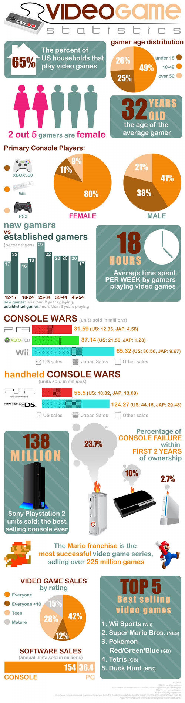

How Games Affect You!
Negative Effects
- Gaming can negatively affect your vision, memory, and brain.
- Gaming can kill brain cells and interrupt sleep.
- "Shooter Games" can damage the hippocampus area of your brain, the area used for spatial and long-term memories
- "Aggressive" video games can often result in aggressive behavior and have the gamers have decreased level of empathy for others.
- Gaming for more than 3 hours can result in hyperactivity, attention problems, and inept social skills.
- Gaming for more than 3 hours can cause computer eye syndrome, eye pain, issues with focusing, and even headaches.
Positive Effects
- Gaming for at the most 1 hour can result in better social skills and the enjoyment of life overall.
- Gaming can make you live longer by stimulating your brain.
- Gaming can make you a better, faster decision maker.
- Gaming can improve hand-eye coordination.

Aidan's Favorite Games
Different Ways To Game
Home
Mike's Favorite Games
Gamer Memes